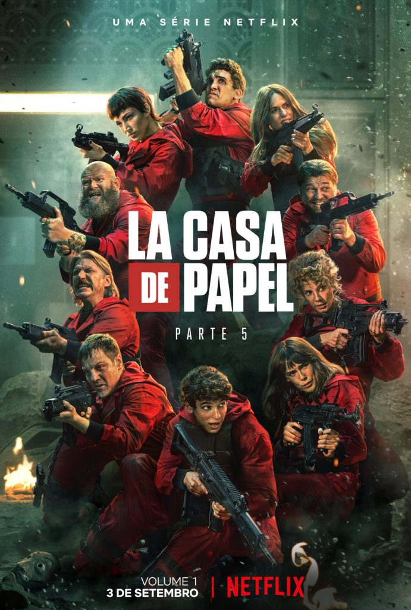
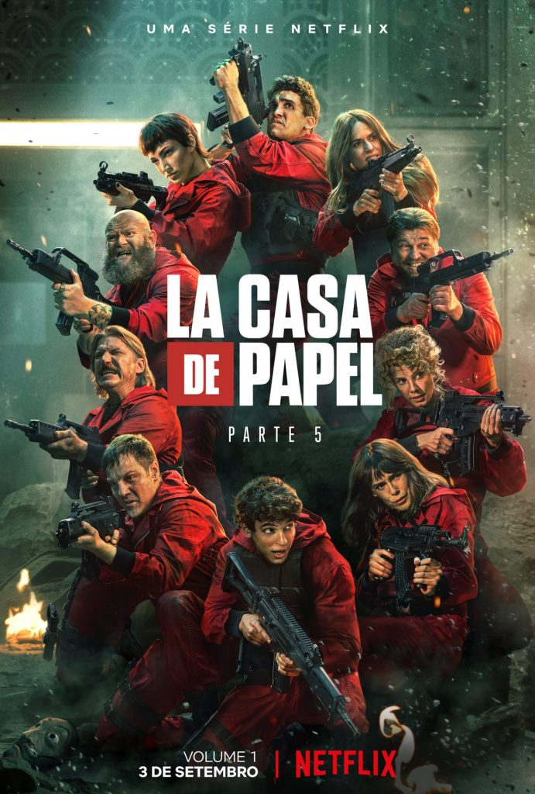

Fundada em 2010 no Brasil, a MendingoFlix é uma empresa de divulgação de dados de filmes e séries, oferecendo trailers, sinopses e informações sobre o elenco. Com uma equipe dedicada e apaixonada pelo cinema, estamos comprometidos em fornecer a melhor seleção possível de produções de todas as partes do mundo, desde baixo orçamento até grandes lançamentos. Sempre atualizando nossa seleção, estamos comprometidos em oferecer uma experiência excepcional aos nossos clientes. Obrigado por escolher a MendingoFlix como sua fonte de informações sobre filmes e séries.
Arthur Mitsuo Yamamoto, Gabriel Ortiz, Vinicius Rossin Guzella e os irmãos Ramon Cezarino Lopez e Daniel dos Santos Araujo Faria, fundaram a MendingoFlix em 2000, quando tinham apenas 18 e 19 anos. Apaixonados por cinema e frequentadores assíduos de festivais de cinema independentes, eles notaram que muitos filmes incríveis e talentosos não estavam sendo divulgados de forma ampla e decidiram fazer algo para mudar isso.
Com uma pequena equipe de entusiastas do cinema, a MendingoFlix iniciou seu trabalho divulgando informações detalhadas sobre filmes e séries, ajudando os espectadores a descobrir novas produções interessantes. Ao longo dos anos, a empresa cresceu e se tornou uma das principais plataformas de divulgação de dados de filmes e séries, oferecendo uma vasta seleção de trailers, sinopses e informações sobre o elenco de produções de todo o mundo.
Apesar de ter evoluído e mudado ao longo do tempo, a MendingoFlix mantém sua paixão pelo cinema independente e continua comprometida em ajudar a promover cineastas talentosos e suas histórias incríveis.
Quais as vantagens de ser nosso assinante?
Como um site de divulgação, fornecemos informações detalhadas sobre muitos filmes e séries independentes exclusivos que você não encontrará em outras plataformas.
Além disso, como mencionei anteriormente, como assinante, você também terá acesso a eventos exclusivos, como sessões de cinema e entrevistas com cineastas independentes. Isso pode ser uma oportunidade única de conhecer os bastidores da produção de filmes e séries independentes e descobrir novos talentos em primeira mão.
Outro benefício de se tornar um assinante é que nossa equipe de curadores experientes está sempre procurando e adicionando novos títulos emocionantes ao nosso catálogo, o que significa que você sempre terá novas descobertas para explorar e desfrutar.
Então, se você é um verdadeiro amante do cinema independente e de qualidade, tornar-se um assinante do nosso site pode ser uma maneira incrível de descobrir e apoiar novos talentos, além de ter acesso a informações exclusivas e eventos emocionantes.